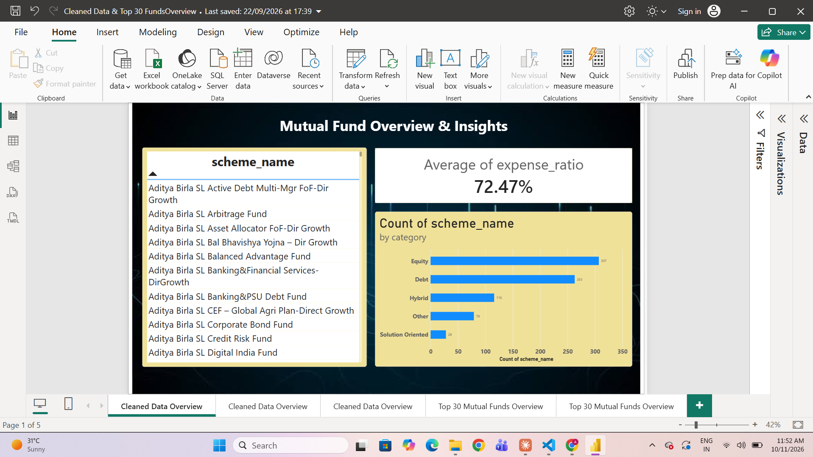

Add screenshot: images/mutual-fund.png

Computer Engineering graduate and Data Analyst with hands-on experience in Python, SQL, Power BI, machine learning and full-stack development. Looking for a Software Engineer, Data Analyst or Full-Stack Developer role or internship.
I'm a Computer Engineering graduate (B.E., Mumbai University, 2026) who enjoys cleaning messy data, finding the story in it and showing it clearly. I use Python, SQL, Power BI and Excel for analysis, and I've shipped end-to-end projects from an AI-based recruitment platform to deep-learning media tools.
Currently: exploring AI, data analytics and blockchain through campus tech communities, hackathons and open-source work.
Languages: English, Hindi, Urdu.
Mutual funds analysed
NSE stocks tracked
Trading days per stock
Completed two data projects: mutual fund scoring and ranking with Power BI, and moving-average signals for NSE stocks in SQL.
Took part in coding hackathons and AI/ML workshops at NHITM, contributed code and documentation to open-source and academic projects on GitHub, and stayed active in campus tech communities.
Mumbai University. Completed.
Maharashtra Board.
Maharashtra Board.